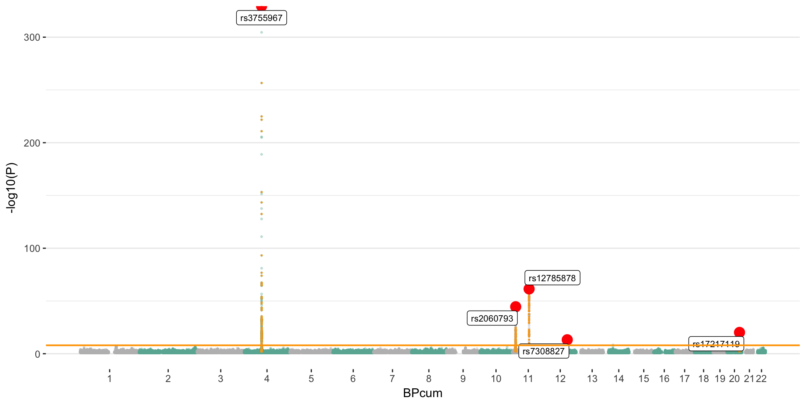

Yan Holtz, Zhihong Zhu, Julanne Frater, Perry Bartlett, Jian Yang, John McGrath
A GWAS of 25 hydroxyvitamin D GWAS blood concentration has been realized and extensively described in this study. To put it in a nutshell, Vitamin-D concentration was available for a sample of about 426,000 european in the UK Biobank dataset. GWAS was run using a mixed linear model implemented in bolt, taking into account the relativeness between individuals. An extensive description of the results can be found here. This GWAS is the basis of all the following mendelian randomization results.
The manhattan plot below gives a glimpse of the vitamin D GWAS result. Basically, 6 main loci were significantly associated with vitamin-D concentration in blood.
# Load useful libraries
library(tidyverse)
library(qqman)
library(readr)
library(DT)
library(RColorBrewer)
library(ggrepel)
# -------- Read result
data=read_delim("0_DATA/GWAS_vitaminD_XiaEtAL.linear.gz", col_names=T, delim=" ")
data$CHR=as.factor(data$CHR)
# -------- Read after clumping data
clump=read.table("0_DATA/result_GWAS_VitaminD_XiaEtAl_clumped", header=T)
# A list of all SNPs implicated in an association?
Hit_SNP <- c(
as.character(clump$SNP),
strsplit(as.character(clump$SP2), ',', fixed=TRUE) %>% unlist() %>% gsub("\\(.\\)", "", .)
)
Hit_SNP <- Hit_SNP[Hit_SNP != "NONE"]
# -------- Add cumulative position + clumping information to data
don <- data %>%
# Compute chromosome size and merge this info to the GWAS result
group_by(CHR) %>%
summarise(chr_len=max(BP)) %>%
mutate(tot=cumsum(chr_len)-chr_len) %>%
dplyr::select(-chr_len) %>%
left_join(data, ., by=c("CHR"="CHR")) %>%
# keep only SNP with pvalue < 0.05: it makes the plot realisation way faster
filter( P<0.1 ) %>% # | SNP %in% sample(data$SNP, 150000)
# Add a cumulative position colummn to the data set
arrange(CHR, BP) %>%
mutate( BPcum=BP+tot) %>%
# Add clumping information
mutate( is_major=ifelse(SNP %in% clump$SNP & P<10e-8, "yes", "no")) %>%
mutate( is_clump=ifelse(SNP %in% Hit_SNP, "yes", "no"))
# -------- prepare X axis
axisdf = don %>% group_by(CHR) %>% summarize(center=( max(BPcum) + min(BPcum) ) / 2 )
# -------- Basic plot
ggplot(don, aes(x=BPcum, y=-log10(P))) +
# Show all points
geom_point( aes(color=as.factor(CHR)), alpha=0.3, size=0.5) +
scale_color_manual(values = rep(c("grey", "#69b3a2"),44)) +
# Add highlighted points for significant association:
geom_point(data=subset(don, is_clump=="yes"), color="orange", size=0.2) +
geom_point(data=subset(don, is_major=="yes"), color="red", size=4) +
geom_label_repel( data=subset(don, is_major=="yes"), aes(label=SNP), size=2.8) +
# Make X axis:
scale_x_continuous( label = as.character(axisdf$CHR), breaks= axisdf$center ) +
# Signicativity line
geom_hline(yintercept = 8, color="orange", size=0.7) +
theme_bw() +
theme(
legend.position="none",
panel.border = element_blank(),
panel.grid.major.x = element_blank(),
panel.grid.minor.x = element_blank()
)
Mendelian randomization techniques will use significant SNPs of this GWAS as instruments to test the causality of vitamin-D on several other traits. The number of significant loci must be at leat 10 to get a truthworthy result. Currently, the associated loci are:
A work by Yan Holtz
Yan.holtz.data@gmail.com